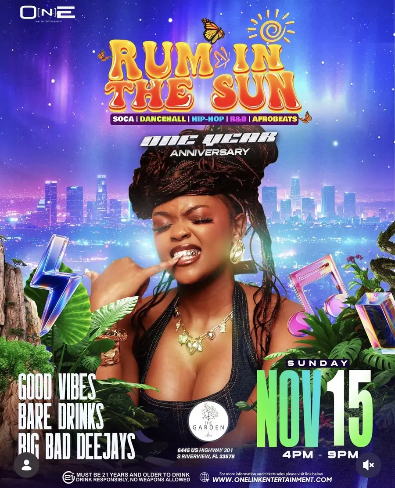
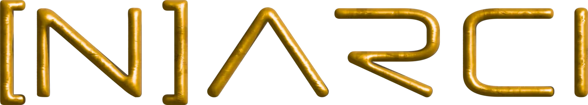

DJ out of Tampa Bay. Island sounds, big energy, all night.
AfrobeatsDancehallSocaHip-hopR&B
Next up
Starts in
00
days00
hours00
minutes00
seconds
DJ out of Tampa Bay. Island sounds, big energy, all night.

Starts in